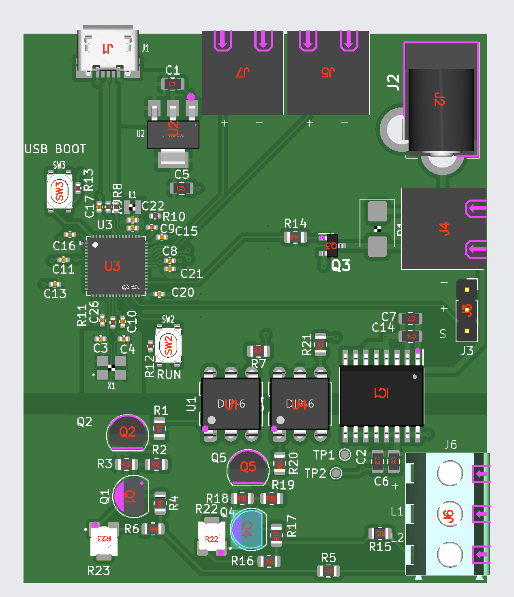

Head-Fixed Board
The head-fixed board is a custom board for self head-fixation tasks. It is connected to the Raspberry Pi by USB and controls:
An electromagnet that holds the animal’s headbar. When it is switched off, a return spring releases the headbar.
A servo motor, for any mechanism of the rig.
Two lickports. A lick is detected when the animal, standing on a metal base, touches the steel tube it drinks from: a tiny current flows through its body. Each lick goes straight to the photogate input of a Bpod port board, so the Bpod state machine sees it as a
PortIn/PortOutevent, with Bpod’s own timing. The licks are also reported to the Raspberry Pi over USB.
The board is built around an RP2354 microcontroller (the chip of the Raspberry Pi Pico 2), with its own firmware, which is in the Training Village repository.
The Board


Connector |
Label |
Connect to |
|---|---|---|
J1 |
(micro-USB) |
A USB port of the Raspberry Pi |
J2 |
(DC jack) |
A 5 V power supply (5.5 V maximum) |
J3 |
|
The servo motor |
J4 |
The electromagnet |
|
J5 |
|
The photogate input of the Bpod port board of lickport 1 ( |
J7 |
|
The photogate input of the Bpod port board of lickport 2 |
J6 |
|
The metal base the animal stands on |
J6 |
|
The steel tube of lickport 1 |
J6 |
|
The steel tube of lickport 2 |
The two buttons are only for loading the firmware: USB BOOT (SW3) and RUN (SW2).
The two trimmers set the sensitivity of each lickport: R23 for L1 and R22 for L2
(see Adjusting the Lick Detection).
Power
USB alone only powers the microcontroller. The board answers the Raspberry Pi, but it detects no licks and cannot move the servo or the electromagnet.
The 5 V jack (J2) powers the electromagnet, the servo and the lick circuit. It is needed for everything except talking to the board. It must be 5 V: the isolated supply of the lick circuit accepts 5.5 V at most.
The lick circuit is galvanically isolated from the rest of the board (its own isolated supply and optocouplers), so the current that flows through the animal never shares a ground with the Raspberry Pi or the Bpod.
Licks in Bpod
At rest the board keeps J5 and J7 at 0 V, and during a lick it puts 3.3 V on them. The
Bpod reads 3.3 V as a poke in, so a lick on lickport 1 gives PortNIn when it starts
and PortNOut when it ends, where N is the port board that J5 is connected to (the
same for lickport 2 and J7). Those ports must be enabled in BPOD_BEHAVIOR_PORTS
(SETTINGS → CONTROLLER SETTINGS).
Setup
Loading the firmware
The firmware is in the folder village/head_fixed_firmware of the repository:
head_fixed_firmware.ino is the source code and head_fixed_firmware.uf2 the compiled
firmware, ready to load. A new board needs it once, and again whenever the firmware
changes. It can be loaded from any computer:
Connect the board by USB.
Hold down
USB BOOT, press and releaseRUN, and releaseUSB BOOT. The board appears as a USB drive calledRP2350.Copy
head_fixed_firmware.uf2to that drive. The board restarts by itself with the new firmware, and the drive disappears.
To change the firmware, open head_fixed_firmware.ino in the Arduino IDE with the
Raspberry Pi Pico/RP2040/RP2350 core by Earle Philhower (add
https://github.com/earlephilhower/arduino-pico/releases/download/global/package_rp2040_index.json
to the additional boards manager URLs) and the board Generic RP2350. Upload it
with the board in boot mode as above, or export it (Sketch → Export Compiled Binary) and replace head_fixed_firmware.uf2 with the new file, so both always match.
The included .uf2 was compiled with version 6.3.2 of the core.
Settings
Enable the board in SETTINGS → HEAD FIXED SETTINGS. Changes are applied when the
Training Village restarts.
USE_HEAD_FIXED_BOARD
Enables the head-fixed board. Default: OFF. While it is OFF, the rest of the
section is hidden and head_fixed does nothing (see
Using It in Tasks).
HEAD_FIXED_PORT
The USB serial port of the board. Default: auto, which looks for it among the USB
serial ports: it is the one with a Raspberry Pi RP2 chip that answers to PING. The
Bpod is never confused with it. Set a path (for example /dev/ttyACM1, or a udev
symbolic link) only if auto does not find the board.
If the board is not found when the Training Village starts, it shows the warning
Error connecting to: head_fixed, with the reason in the events log. A board plugged
in later is not picked up: restart the Training Village.
Using It in Tasks
In a task the board is self.head_fixed:
self.head_fixed.magnet(30) # electromagnet on: a 200 ms kick, then held at 30 %
self.head_fixed.magnet(20) # already on: only changes the power
self.head_fixed.magnet_off() # off: the spring releases the headbar
self.head_fixed.servo(90) # servo to 90 degrees, as fast as possible
self.head_fixed.servo(45, time_ms=500) # to 45 degrees, taking 500 ms
self.head_fixed.servo_off() # stops the servo pulses: no holding torque
Anywhere else (direct functions, triggers…) import it:
from village.devices.head_fixed import head_fixed.
All of them return immediately: the board does the work (the kick of the electromagnet, the ramp of the servo…).
magnet(power): switches the electromagnet on, or changes its power if it is already on.poweris in % (0-100); 0 switches it off. Switching on always starts with a 200 ms kick at a higher power, to pull the headbar in, and then holds atpower. The firmware caps the holding power at 40 % and the kick at 60 %, to keep the electromagnet from overheating.magnet_off(): switches the electromagnet off.servo(angle, time_ms=0): moves the servo toangle(0-180 degrees, the same range as the motors). Withtime_ms, the movement takes that long. The first movement after the board starts goes straight to the angle, since the real position is not known yet. The servo keeps holding its position untilservo_off.servo_off(): stops the servo pulses. It stops resisting, and can be pushed out of position.status(): asks the board for its state and returns it as a dictionary, orNoneif it does not answer within 1 s. For example:{"mag": "HOLD", "power": "30.0", "on_ms": "1520", "remaining_ms": "598480", "lockout_ms": "0", "servo": "90.0", "L1": "0", "L2": "0", "raw1": "27", "raw2": "30", "dropped": "0"}.magnet_on: whether the electromagnet is on, as last reported by the board.lick_count: the licks detected on lickports 1 and 2,[licks1, licks2], since the Training Village started.reset_lick_count()sets it back to[0, 0].on_lick: optional function called on every lick start and end, ason_lick(lickport, state, board_ms):lickportis 1 or 2,state1 (start) or 0 (end),board_msthe board’s clock in ms. It runs in the thread that reads the board: keep it fast. With Bpod you don’t need it: the state machine already gets the licks, with better timing.
With Bpod, the licks are used like any poke. For example, with J5 connected to the port board of port 1:
from village.custom_classes.task_base import BpodEvent, BpodOutput, TaskBase
class HeadFixedLicks(TaskBase):
def start(self):
self.head_fixed.magnet(30) # fix the headbar for the whole session
def create_trial(self):
self.bpod.add_state(
state_name="wait_lick",
state_timer=10,
state_change_conditions={
BpodEvent.Port1In: "reward", # a lick on lickport 1
BpodEvent.Tup: "exit",
},
output_actions=[],
)
self.bpod.add_state(
state_name="reward",
state_timer=0.05,
state_change_conditions={BpodEvent.Tup: "exit"},
output_actions=[BpodOutput.Valve1],
)
def after_trial(self):
pass
def close(self):
self.head_fixed.magnet_off()
Note
When USE_HEAD_FIXED_BOARD is OFF, or the board could not be connected, head_fixed is a
stand-in that does nothing: magnet() and servo() are ignored, status() returns
None and lick_count stays at [0, 0]. A task can then run without the board.
Safety of the Electromagnet
The electromagnet is protected by the firmware, whatever the Raspberry Pi does:
It never stays on more than 10 minutes. After that, the board switches it off by itself, and a second, independent timer switches it off half a second later if the first one failed.
A quick off and on does not restart the count. If it is switched on again less than 5 s after switching it off, the time it was already on still counts towards the 10 minutes.
After those 10 minutes, it cannot be switched on for 30 s.
magnet()is refused meanwhile (the board answersERR LOCKOUTand it is written in the events log).If the board hangs, it restarts within half a second (hardware watchdog), with the electromagnet off.
The Training Village also switches it off at the end of every session, even if the
task’s close did not do it or failed, and when the Training Village exits or restarts.
The board keeps its state while the Training Village is closed: without this, the
electromagnet could stay on until its 10 minutes ran out.
Testing the Board
With the Training Village closed (it would keep the port busy), run on the Raspberry Pi:
python3 village/scripts/check_head_fixed.py
It finds the board, prints every message it sends (licks, electromagnet and servo
events), and sends the commands you type, one per line: MAG 30, OFF,
SERVO 90 500, SERVO_OFF, STATUS, HELP. Ctrl+C or an empty line stops it and
switches the electromagnet off. Use --port /dev/ttyACM1 to give the port instead of
finding it.
With the Training Village running, the board can be tested from the FUNCTIONS tab by
adding direct functions to the project:
from village.custom_classes.direct_functions_base import DirectFunctionsBase
from village.devices.head_fixed import head_fixed
class DirectFunctions(DirectFunctionsBase):
def function1(self):
"""Magnet On"""
head_fixed.magnet(30)
def function2(self):
"""Magnet Off"""
head_fixed.magnet_off()
def function3(self):
"""Servo 0"""
head_fixed.servo(0, time_ms=500)
def function4(self):
"""Servo 90"""
head_fixed.servo(90, time_ms=500)
Adjusting the Lick Detection
The board reads each lickport as a value from 0 to 4095, which rises during a lick. To
see those values while licking, run the test script with --raw:
python3 village/scripts/check_head_fixed.py --raw 0.2
It prints raw1 and raw2 every 0.2 s, and L1 / L2 (1 during a lick). The 5 V jack
must be connected. Touch the tube and the base at the same time with your fingers (or
connect a 1-10 MΩ resistor between + and L1) and turn the trimmer of that lickport
(R23 for L1, R22 for L2) until the value clearly goes above 2600 during the touch
and back below 1500 without it.
Those thresholds are constants of the firmware (in head_fixed_firmware.ino), as is
the time a change must last to count (debounce):
Constant |
Default |
Meaning |
|---|---|---|
|
2600, 2600 |
Value above which a lick starts (lickports 1, 2) |
|
1500, 1500 |
Value below which it ends |
|
50, 100 |
µs a change must last to count |
|
|
|
Messages in the Events Log
Message |
Meaning |
|---|---|
|
The board was found when the Training Village started. |
|
The task left it on for 10 minutes. |
|
|
|
|
|
The board lost power or was unplugged and plugged back. The electromagnet is off. |
|
The firmware hung and the watchdog restarted the board. The electromagnet is off. |
|
The USB was disconnected. Restart the Training Village once it is back. |
USB Protocol
The firmware speaks a text protocol over the USB serial port, one line per command
(terminated with \n). head_fixed uses it, and any other program can too:
Command |
Effect |
|---|---|
|
Electromagnet on at that power (or a new power if it is on). |
|
Electromagnet off |
|
Servo to that angle, optionally taking |
|
Servo pulses off |
|
Replies |
|
Replies |
|
Lists the commands |
Messages the board sends by itself (t_ms is the board’s clock):
Message |
When |
|---|---|
|
A lick starts (1) or ends (0) on lickport 1 or 2 |
|
The electromagnet switched on |
|
Its power changed while on |
|
It switched off: by command, or by the 10 minute limit |
|
A servo movement was accepted |
|
The servo pulses stopped |
|
A command was refused ( |
|
The board started |
Building the Board
The Gerber, BOM and component position files of the board are in the
PCB files (folder
head_fixed), ready to order an assembled board.